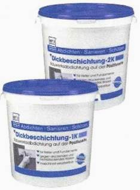
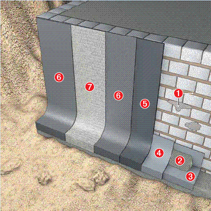

Толстослойная битумная гидроизоляция
Толстослойное покрытие 1К и Толстослойное покрытие 2К
ДОЛГОВЕЧНАЯ И НАДЁЖНАЯ ЗАЩИТА ОТ СЫРОСТИ!
Новая редакция DIN 18195, части 1 - 6 впервые регламентирует модифицированные полимерами битумные толстослойные покрытия (КМВ). В этом стандарте отражена испытанная вт ечение нескольких десятилетий строительная практика, с целью гарантировать надёжность проектирования и применения, а также обеспечить правовые основания применения толстослойных гидроизоляционных покрытий.
Такие гарантии предполагают очень высокие требования к свойствам материала и способу его нанесения. Толстослойные покрытия HEYDI очень хорошо перекрывают трещины, высокоэластичны, водонепроницаемы и устойчивы к естественным водам агрессивным по отношению к бетону. Нанесение покрытия осуществляется с помощью кельмы или механизированным способом. Использование Армирующего полотна 100 позволяет обеспечить выполнение гидроизоляции в зонах, подверженных образованию трещин и зонах с повышенной нагрузкой.
МОДИФИЦИРОВАННЫЕ ПОЛИМЕРАМИ ТОЛСТОСЛОЙНЫЕ ПОКРЫТИЯ 1К И 2К.
ГИДРОИЗОЛЯЦИЯ СОГЛАСНО DIN 18195

КОМПОНЕНТЫ СИСТЕМЫ:a) Трассовый раствор
b) Уплотнительный раствор
c) Эластичный серый шлам К11
d) Толстослойное покрытие 1К или 2К
e) Армирующее полотно 100
f) Клейкая лента SK
g) Дождезащитное средство
ОБЛАСТИ ПРИМЕНЕНИЯ:
Подвалы, подземные гаражи, фундаменты, фундаментные плиты, стыки, походки труб и т.д.
- для изоляции от влажности грунта и воды под давлением
- наносятся на все минеральные основания, способные нести нагрузку
- очень хорошо перекрывают трещины, обладают высокой эластичностью, водонепроницаемые, устойчивы к природной воде, разрушающей бетон
- можно наносить механизированным способом
- испытаны согласно DIN 18195
НАДЁЖНАЯ ГИДРОИЗОЛЯЦИЯ ОБЕСПЕЧИВАЕТ ЗАЩИТУ СООРУЖЕНИЙ
1. Трассовый раствор: выравнивающий

раствор с зернистостью до 4 мм. Для закрытия дефектных мест перед нанесением Эластичного серого шлама К11.
2. Уплотнительный раствор: улучшенный полимерами раствор для ремонтных работ, с очень хорошей прочностью сцепления и прочностью при сжатии. Используется для формирования галтелей.
3+4. Эластичный серый шлам К11: 2х-компонентный гидроизоляционный шлам, допускающий нагрузку вскоре после нанесения. Защищает от воды воздействующей как снаружи, так и изнутри основания.
5. Битфлекс или Толстостослойное
покрытие 2К: для грунтовки поверхности. Разбавляются водой в соотношении 1:6.
6. Толстостослойное покрытие 1К или 2К: для долгосрочной изоляция от влажности грунта и воды под давлением, а также для фиксации защитных, дренажных или изоляционных плит.
7. Армирующее полотно 100: покрытая пластмассой стеклоткань. Служит для армирования Толстостослойных покрытий 1К и 2К в зонах, подверженных образованию трещин, и в зонах с повышенной нагрузкой.
Клейкая лента SK: высокоэластичная, клейкая с двух сторон лента, наносится в холодном состоянии. Служит для эластичного заклеивания разделительных швов зданий.
Дождезащитное средство: низковязкий раствор для разбрызгивания. Служит для защиты свеженанесённого Толстостослойного покрытия от влаги.